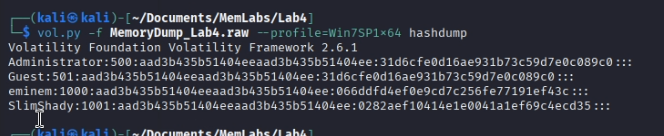

En este write-up, me adentro en los retos de MemLabs, una serie de laboratorios diseñados para poner a prueba nuestras habilidades en el análisis de volcados de memoria. Equipado con Volatility, una de las herramientas más potentes para diseccionar sistemas vivos o caídos, iré desenterrando credenciales, procesos sospechosos, conexiones de red y cualquier pista que hayan dejado atrás.
Ya en el cuarto laboratorio, nos acercamos al final de estos desafíos. En este write-up analizo MemLabs Lab 4 - Obsession, el último reto de dificultad media de la serie. ¡Vamos a descubrir qué secretos esconde!
Mi sistema fue comprometido recientemente. El hacker robó mucha información, pero además eliminó un archivo muy importante para mí. No tengo ni idea de cómo recuperarlo. La única evidencia que tenemos en este momento es este volcado de memoria. Por favor, ayúdame.
Además, este reto consta de 1 flag.
Para sacar la memoria debemos usar el siguiente comando:
vol.py -f MemoryDump_Lab4.raw imageinfo
Se me olvidó sacar la foto _/( ·-·)\_
Como ya he dicho varias veces, podemos usar cualquira que nos salga.
Como no se que buscar exactamente, voy a examinar un poco de todo y mostraré lo interesante.
Empecemos como no por listar los usuarios del sistema. Encontramos los usuarios Eminen y SlimShady.
En el escritorio de Eminen encontramos 2 imágenes.
Aunque no se ve con claridad
En el escritorio de SlimShady encontramos un archivo importante.
Desgraciadamente, no se puede exportar. Usando iehistory también vemos mención a este archivo:
Pero da igual lo que intente, no consigo extraerlo. Entiendo que, cuando dijeron que lo habían borrado, es porque no hay forma posible de recuperarlo.
Mas tiene que estar en la memoria de alguna forma u otra. Así que usaré mftparser, el cual sirve para recuperar información sobre archivos, incluidos los eliminados, como nombres, rutas y fechas, lo que ayuda a rastrear archivos eliminados o actividad sospechosa.
Quitando todos los puntos, obtendremos la flag completa.
Ya hemos terminado con el último reto de dificultad media, solo nos quedan 2 retos difíciles para completar el laboratorio.
En este reto hemos aprendido una funcionalidad de Volatility. Podemos ver las tablas maestras que, en resumen, sirven para ver todos los archivos que dejaron un rastro en la memoria RAM. A diferencia de filescan, estos archivos no se pueden extraer, pero si que se pueden ver los archivos que se han eliminado.
Ir al laboratorio anterior